A regular expression (also called regex) is a way to work with strings
You can
- search text a string
- replace substrings in a string
- extract information from a string
In JavaScript, a regular expression is an object, which can be defined in two ways.
The first is by instantiating a new RegExp object using the constructor:
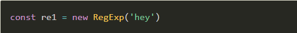The second is using the regular expression literal form:
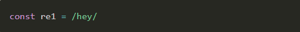How does it work?
You can test the regex using RegExp.test(String), which returns a boolean

Anchoring
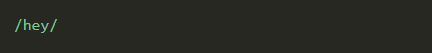The ^ operator
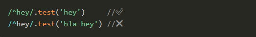The $ operator
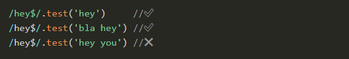Combine
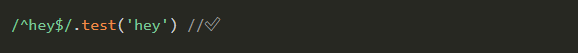The .* operator
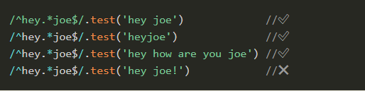Match items in ranges
You can choose to match any character in a range
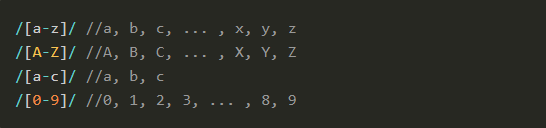 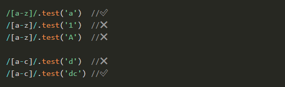Ranges can be combined
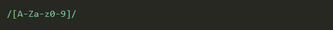 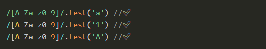Matching a range item multiple times
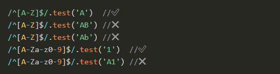Negating a pattern
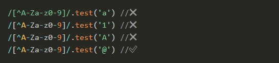Meta characters
- \d matches any digit, equivalent to [0-9]
- \D matches any character that’s not a digit, equivalent to [^0-9]
- \w matches any alphanumeric character (plus underscore), equivalent to [A-Za-z_0-9]
- \W matches any non-alphanumeric character, anything except [^A-Za-z_0-9]
- \0 matches null
- \n matches a newline character
- \t matches a tab character
- \S matches any character that’s not a whitespace
Regular expressions choices
The | operator
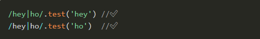Quantifiers
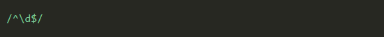The ? operator
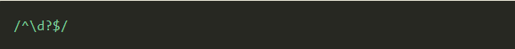+
Match one or more (>=1) items
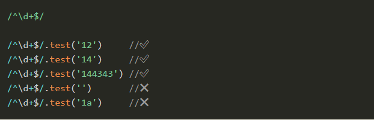*
Match 0 or more (>= 0) items
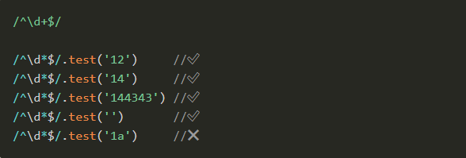{n}
Match n items
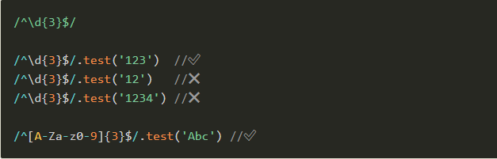{n,m}
Match between n and m times:
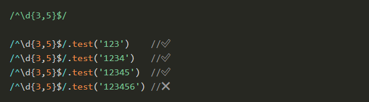At least n items
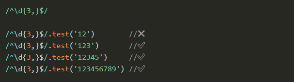Optional items
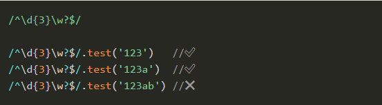Groups
Using parentheses, you can create groups of characters: (...)
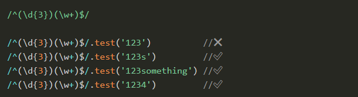 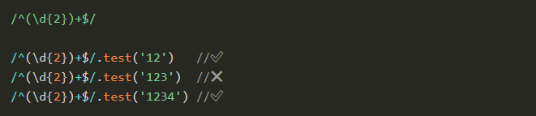Capturing Groups
A very cool feature of regular expressions is the ability to capture parts of a string, and put them into an array. You can do so using Groups, and in particular Capturing Groups.
- String.match(RegExp)
- RegExp.exec(String)
If there is no match, it returns null
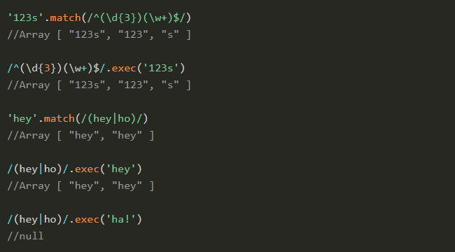 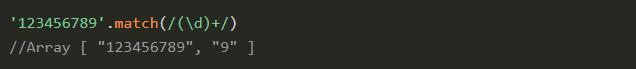Optional groups
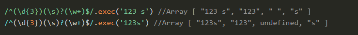Using match and exec without groups
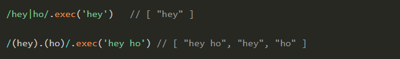Noncapturing Groups
If you need a way to ignore some groups in the resulting array
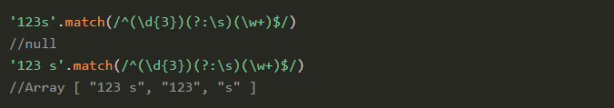Flags
- g: matches the pattern multiple times
- i: makes the regex case insensitive
- m: enables multiline mode
- s: (new in ES2018) short for single line,
- u: enables support for unicode
Inspecting a regex
Given a regex, you can inspect its properties
- source the pattern string
- multiline true with the m flag
- global true with the g flag
- ignoreCase true with the i flag
- lastIndex
Escaping
- \
- /
- []
- ()
- {}
- ?
- +
- *
- |
- .
- ^
- $
Replacing using Regular Expressions
The String object in JavaScript has a replace() method, which can be used without regular expressions to perform a single replacement on a string
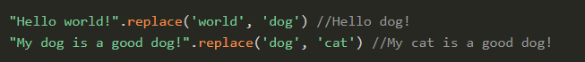 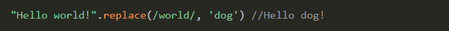Using the g flag is the only way to replace multiple occurrences in a string
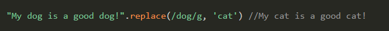 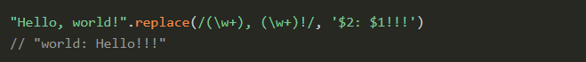